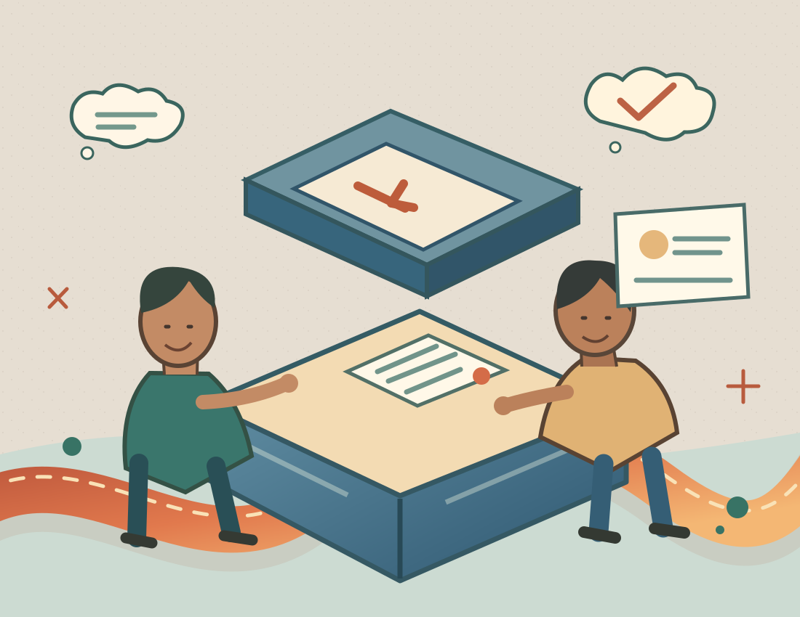

Questions without
clear answers.
Important details are hard to find or explained differently across different parts of the journey.
YOUR BUSINESS NEED / 03
Customers remember how easy it was to understand your business, get an answer and know what happens next. Better experiences begin with clear communication and careful follow-through—not extra complexity.
CLEAR ANSWERS THOUGHTFUL HANDOVERS BETTER UNDERSTANDING

01 / THE CHALLENGE
A customer should not need to chase basic information, repeat the same story or guess what your business will do next.
Important details are hard to find or explained differently across different parts of the journey.
Teams may lose context between enquiries, service conversations and delivery updates.
Unclear owners and follow-up expectations make otherwise ordinary interactions more difficult.
02 / INTERACTIVE CUSTOMER JOURNEY
Select a touchpoint to explore useful ways of communicating. These are fictional, general business examples—not an active support desk, ticketing service or customer account.
01 / DISCOVER
Explain services, requirements, timing and how to make contact in clear language. Make frequently needed information easy to find.
02 / CONNECT
Agree how a customer reaches the right person. Ask only for information needed to help, with appropriate privacy safeguards for any future implementation.
03 / CONTINUE
Set expectations for updates, handovers, timelines and decisions. Keep communications relevant and respect consent and channel preferences.
04 / IMPROVE
Look for repeated questions and communication gaps, then improve explanations and processes using appropriate, permissioned feedback.
Conceptual journey only · No enquiries, messages or customer records are collected, stored or sent
03 / THE APPROACH
Good service does not begin with a chatbot or a new platform. Start with what customers need and what the business can reliably deliver.
Identify common customer questions, key service moments and current communication channels.
CUSTOMER CONTEXTDefine responsibilities, messages and escalation routes before adding any technology.
TEAM COORDINATIONReview what works, use authorized feedback and discuss tools only when fit, security and cost are understood.
CONTINUOUS LEARNING04 / WHERE TO START
Connected Growth is a relevant starting discussion when customer communication spans discovery, sales, service and delivery. Business Efficiency may be relevant when internal handovers are the main obstacle.
These are exploratory package directions. Exact services, response channels, integrations, security controls, pricing and availability must be agreed before delivery.
Compare the four packagesExplore more consistent communication across the customer journey, with clear responsibilities and suitable channels.
Request a proposalConsider process and team coordination improvements where they help customers receive clearer updates.
Request a proposal05 / HONEST EVIDENCE
Real customer examples, service improvements, testimonials and outcome measures will appear only after client permission and verification. No satisfaction score or service level is claimed here.
Pending: client approval, service context, confirmed work scope, relevant permissions and verified outcomes.
NOT A REAL TESTIMONIAL OR DELIVERED PROJECT CLAIM06 / THE NEXT STEP
Tell us where customers get stuck or teams lose context. We can explore an appropriate scope—without promising specific satisfaction results or unsupported technical capabilities.
This opens the existing external proposal destination. Enquiry submission and receipt have not been independently verified. Nothing is submitted by this page.